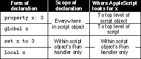

Scope of Properties and Variables Declared in a Script Object
You should be familiar with Chapter 9, "Script Objects," before you read
this section.Figure 8-2 summarizes the scope of properties and variables declared at the top level of a script object. Sample scripts using each form of declaration follow.
Figure 8-2 Scope of property and variable declarations at the top level
of a script object
The scope of a property declaration at the top level of a script object extends to any subsequent statements in that script object. Here's an example.
script Joe property theCount : 0 on increment() set theCount to theCount + 1 return theCount end increment end script tell Joe to increment() --result: 1 tell Joe to increment() --result: 2When it encounters the identifier theCount at any level of the script objectJoe, AppleScript associates it with the same identifier declared at the top
level of the script object. The value of the propertytheCountpersists until
you reinitialize the script object by running the script again.The scope of a property declaration at the top level of a script object doesn't extend beyond the script object. Thus, it is possible to use the same identifier in different parts of a script to refer to different properties, as this example demonstrates:.
property theCount : 0 script Joe property theCount : 0 on increment() set theCount to theCount + 1 return theCount end increment end script tell Joe to increment() --result: 1 tell Joe to increment() --result: 2 theCount --result: 0AppleScript keeps track of the propertytheCountdeclared at the top level of the script separately from the propertytheCountdeclared within the script objectJoe. Thus, thetheCountproperty declared at the top level of the scriptJoeis increased by 1 each timeJoeis told to increment, but thetheCountproperty declared at the top level of the script is not affected.Like the scope of a property declaration, the scope of a global variable declaration at the top level of a script object extends to any subsequent statements in that script object. However, as the next example demonstrates, AppleScript also associates a global variable with the same variable declared at the top level of the entire script.
set theCount to 0 script Joe global theCount on increment() set theCount to theCount + 1 return theCount end increment end script tell Joe to increment() --result: 1 tell Joe to increment() --result: 2The preceding example first sets the value oftheCountat the top level of the script. When AppleScript encounters thetheCountvariable within theonincrement handler, it first looks for an earlier occurrence within the handler, then at the top level of the scriptJoe. When AppleScript encounters the global declaration fortheCountat the top level of script objectJoe, it continues looking at the top level of the script until it finds the original declaration fortheCount. This can't be done with a property of a script object, because AppleScript looks no further than the top level of a script object for that script object's properties.Like the value of a script object's property, the value of a script object's global variable persists after the script object has been run, but not after the script itself has been run. Thus, telling
Joeto increment repeatedly in the preceding example continues to increment the value oftheCount, but running the whole script again setstheCountto 0 again before incrementing it.The next example demonstrates how you can use a global variable declaration in a script object to associate a global variable with a property declared at the top level of a script.
property theCount : 0 script Norah property theCount : 20 script Joe global theCount on increment() set theCount to theCount + 1 return theCount end increment end script tell Joe to increment() end script run Norah --result: 1 run Norah --result: 2 theCount --result: 2 theCount of Norah --result: 20This script declares two separatetheCountproperties: one at the top level of the script and one at the top level of the script objectNorah. Because the scriptJoedeclares the global variabletheCount, AppleScript looks fortheCountat the top level of the script, thus treating Joe'stheCountandtheCountat the top level of the script as the same variable.If the script object
Joein the preceding example doesn't declaretheCountas a global variable, AppleScript treats Joe'stheCountand thetheCountat the top level of the script objectNorahas the same variable. This leads to quite different results, as shown in the next example.property theCount : 0 script Norah property theCount : 20 script Joe on increment() set theCount to theCount + 1 return theCount end increment end script tell Joe to increment() end script run Norah --result: 21 run Norah --result: 22 theCount --result: 0 theCount of Norah -- result:22The scope of a variable declaration using the Set command at the top level of a script object is limited to the Run handler:script Joe set theCount to 10 on increment() global theCount set theCount to theCount + 2 end increment return theCount end script tell Joe to increment() --error: "The variable theCount is not defined." run Joe--result: 10In contrast to the way it treats such a declaration at the top level of a script, AppleScript treats thetheCountvariable declared at the top level of the script objectJoein the preceding example as local to the script object's Run handler. Any subsequent attempt to use the same variable as a global results in an error.Similarly, the scope of an explicit local variable declaration at the top level of a script object is limited to that script object's Run handler, even if the same identifier has been declared as a property at a higher level in the script:
property theCount : 0 script Joe local theCount set theCount to 5 on increment() set theCount to theCount + 1 end increment end script run Joe --result: 5 tell Joe to increment() --result: 1